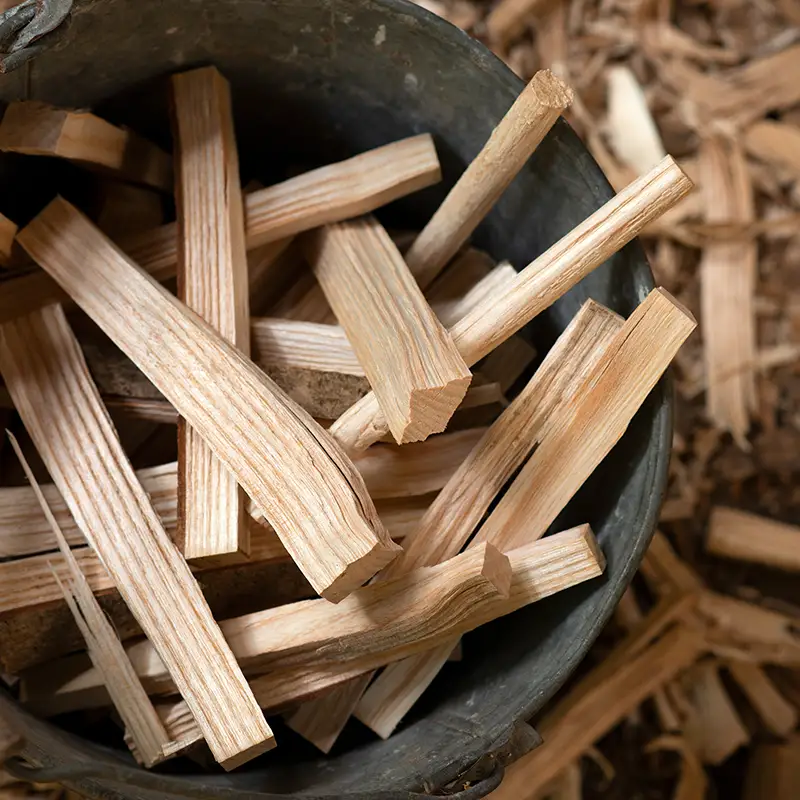

Envoyer un e-mail
Envoyer un e-mail 0478 67 42 24
0478 67 42 24
Du bois d'allumage pour un feu efficace
Le bois d'allumage est un élément essentiel pour démarrer efficacement un feu de bois, que ce soit dans un foyer, un poêle ou un barbecue en plein air. Il joue un rôle crucial dans le processus d'allumage en fournissant la chaleur initiale nécessaire pour enflammer les bûches et maintenir un feu durable.

Qu’est-ce que le bois d’allumage, exactement ?
Le bois d'allumage se divise en deux catégories principales : les petites bûches et les produits spécialement conçus pour l'allumage, tels que les copeaux de bois, les cubes de démarrage et les rondelles de bois compressé.
Les petites bûches, souvent appelées « allume-feu », sont généralement fabriquées à partir de bois résineux comme le pin, le sapin ou l'épicéa, qui brûlent facilement grâce à leur forte teneur en résine.
D'autre part, les produits spécialement conçus pour l'allumage sont souvent fabriqués à partir de déchets de bois compressé et sont imprégnés de cire ou d'autres agents inflammables pour faciliter l'allumage.
Faites le choix de la qualité
Vous recherchez un marchand de bois fiable et expert dans son domaine pour votre bois d’allumage ? Voici plusieurs raisons pour lesquelles vous pouvez me faire confiance :
Avec plus de 14 ans d'expérience dans le bois de chauffage, je possède une bonne connaissance des différentes essences et de leurs propriétés calorifiques. Cette expertise me permet de conseiller chaque client de manière précise, selon ses besoins, que ce soit pour le chauffage domestique, un four à pizza professionnel ou tout autre usage.
Je m'engage à fournir uniquement du bois de qualité. Les bûches sont soigneusement sélectionnées auprès de fournisseurs locaux et issus de circuits responsables. Le bois est séché de manière optimale, souvent pendant deux ans, pour garantir un faible taux d'humidité et une combustion efficace.
Basé à Fleurus, mon bois est 100% belge et bénéficie d'une certification locale. Cela reflète un engagement envers des pratiques responsables et un soutien aux filières locales.
Enfin, je veille à proposer des prix compétitifs sans compromis sur la qualité. Les tarifs sont clairs et la livraison dans certaines zones est incluse, sans frais cachés. Vous bénéficiez ainsi d'un bon rapport qualité-prix.
Vos questions fréquentes
Lors du choix du bois d'allumage, plusieurs facteurs doivent être pris en compte. Tout d'abord, il est important de choisir un bois qui brûle rapidement et produit suffisamment de chaleur pour enflammer les bûches plus grosses. Les bois résineux sont souvent préférés pour cette raison, car ils ont une combustion rapide et génèrent beaucoup de chaleur. De plus, il est important de s'assurer que le bois d'allumage est sec, car le bois humide est plus difficile à allumer et produit beaucoup de fumée. Soyez assuré d’obtenir des conseils personnalisés en me contactant.
L'utilisation du bois d'allumage est une étape cruciale pour démarrer un feu de bois efficace. Voici un guide simple en quatre étapes pour tirer le meilleur parti de votre bois d'allumage :
- 1. Avant de commencer, assurez-vous d'avoir une bonne quantité de bois d'allumage à portée de main. Disposez-les de manière à créer une base solide pour votre feu.
- 2. Disposez les bûches plus grosses sur le bois d'allumage de manière à permettre une circulation d'air optimale. Cela aidera à démarrer le feu plus rapidement et à maintenir une combustion uniforme.
- 3. Placez une ou deux petites bûches d'allumage au centre de votre foyer et allumez-les à l'aide d'une allumette ou d'un briquet. Assurez-vous qu'elles prennent bien feu avant d'ajouter des bûches plus grosses.
- 4. Une fois que le feu est allumé, surveillez-le régulièrement et ajoutez des bûches supplémentaires au besoin pour maintenir une température constante.
En suivant ces étapes simples, vous pourrez utiliser efficacement votre bois d'allumage et profiter d'un feu chaleureux et accueillant.
Opter pour du bois d'allumage naturel au lieu des allume-feu commerciaux présente plusieurs avantages significatifs. Voici pourquoi je recommande d'utiliser du bois d'allumage pour démarrer vos feux, que ce soit dans votre foyer, votre poêle ou même votre barbecue.
Le bois d'allumage que je propose est 100% naturel, contrairement à de nombreux allume-feu du commerce qui contiennent des produits chimiques ou des additifs artificiels. Ces substances peuvent libérer des fumées nocives lors de la combustion et avoir un impact négatif sur l'environnement. En utilisant du bois d'allumage naturel, vous réduisez votre exposition à ces composés et soutenez une approche plus écologique et plus saine pour vous et pour la planète.
Le bois d'allumage naturel, surtout lorsqu'il est correctement séché et préparé, offre une performance de combustion supérieure. Il s'enflamme rapidement et fournit une chaleur intense qui est essentielle pour allumer efficacement des bûches plus grosses. Les allume-feu commerciaux, bien qu'efficaces pour démarrer un feu, ne fournissent souvent pas la même durée de combustion ni la même intensité de chaleur que le bois naturel.
Sur le long terme, utiliser du bois d'allumage peut s'avérer plus économique que l'achat répété d'allume-feu commerciaux. Bien que l'investissement initial dans un stock de bois d'allumage puisse sembler plus élevé, la quantité nécessaire pour démarrer un feu est souvent moins importante grâce à sa haute qualité et son efficacité, ce qui réduit les coûts à long terme.
En plus, en choisissant du bois d'allumage provenant de sources durables, vous contribuez à soutenir des pratiques de gestion forestière responsable. Cela contraste avec certains produits commerciaux qui peuvent provenir de sources moins durables ou être fabriqués à partir de matériaux recyclés de qualité inférieure. En achetant mon bois d'allumage, vous êtes assuré que vous soutenez l'économie locale et les pratiques de gestion durable des forêts.
Le bois d'allumage peut être utilisé dans une variété de situations, offrant une flexibilité que les allume-feu commerciaux ne peuvent pas toujours garantir. Que ce soit pour un feu de camp, un barbecue, ou un poêle à bois, le bois d'allumage s'adapte à toutes les situations, fournissant une base solide pour tout type de feu.
En somme, choisir le bois d'allumage au lieu des allume-feu du commerce est une décision qui bénéficie non seulement à l'environnement mais aussi à votre santé, à votre portefeuille, et à la qualité de vos moments au coin du feu. Pour des feux plus verts, plus sains et plus efficaces, le bois d'allumage naturel est la meilleure option.